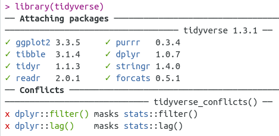
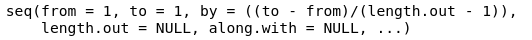

4 Einführung ins tidyverse
Für dieses Kapitel benötigen Sie die folgenden Packages und Data Frames:
library(tidyverse)## ── Attaching packages ─────────────────────────────────────── tidyverse 1.3.1 ──## ✓ ggplot2 3.3.5 ✓ purrr 0.3.4
## ✓ tibble 3.1.4 ✓ dplyr 1.0.7
## ✓ tidyr 1.1.3 ✓ stringr 1.4.0
## ✓ readr 2.0.1 ✓ forcats 0.5.1## ── Conflicts ────────────────────────────────────────── tidyverse_conflicts() ──
## x dplyr::filter() masks stats::filter()
## x dplyr::lag() masks stats::lag()library(magrittr)##
## Attaching package: 'magrittr'## The following object is masked from 'package:purrr':
##
## set_names## The following object is masked from 'package:tidyr':
##
## extracturl <- "http://www.phonetik.uni-muenchen.de/~jmh/lehre/Rdf"
asp <- read.table(file.path(url, "asp.txt"))
int <- read.table(file.path(url, "intdauer.txt"))
vdata <- read.table(file.path(url, "vdata.txt"))Nutzen Sie die Methoden aus Kapitel 3.2, um sich mit den einzelnen Data Frames vertraut zu machen!
Das tidyverse ist eine Sammlung von Packages, die bei unterschiedlichen Aspekten der Datenverarbeitung helfen. Wir werden uns im Verlauf der nächsten Wochen mit einigen dieser tidyverse-Packages beschäftigen. Wenn Sie das tidyverse laden, sehen Sie folgendes:

Zum tidyverse in der Version 1.3 gehören die acht dort aufgelisteten Packages (ggplot2, tibble, tidyr, readr, purrr, dplyr, stringr, forcats). All diese Pakete können Sie auch einzeln laden, wenn Sie das möchten. Zusätzlich wird angezeigt, dass es zwei Konflikte gibt: Die Notation dplyr::filter() bedeutet “die Funktion filter() aus dem Paket dplyr.” Diese Funktion überschreibt die Funktion filter() aus dem Paket stats (das ist ein Paket, das den NutzerInnen ohne vorheriges Laden mittels library() immer zur Verfügung steht). Funktionen aus verschiedenen Paketen können sich gegenseitig überschreiben, wenn sie denselben Funktionsnamen haben, wie z.B. filter(). Wenn man nun also filter() verwendet, wird die Funktion von dplyr verwendet, nicht die Funktion von stats. Wenn man explizit die Funktion von stats verwenden will, kann man die obige Notation verwenden, also stats::filter().
Viele Funktionen aus dem tidyverse dienen dazu, traditionelle R Notationen abzulösen. Diese traditionellen Notationen sind häufig recht sperrig; tidyverse-Code hingegen ist leicht zu lesen und zu schreiben. Wir verwenden tidyverse, um Data Frames aufzuräumen, zu filtern oder zu verändern.
4.1 Pipes
Dazu müssen wir zuerst lernen, wie die tidyverse-Syntax funktioniert:
asp %>% head()## d Wort Vpn Kons Bet
## 1 26.180 Fruehlingswetter k01 t un
## 2 23.063 Gestern k01 t un
## 3 26.812 Montag k01 t un
## 4 14.750 Vater k01 t un
## 5 42.380 Tisch k01 t be
## 6 21.560 Mutter k01 t unWir beginnen den Code immer mit dem Date Frame und hängen dann einfach alle Funktionen, die wir auf den Data Frame anwenden wollen, in chronologischer Reihenfolge an den Data Frame. Zwischen jeder Funktion steht die Pipe %>%. Die Pipe nimmt immer das, was links von der Pipe steht, und reicht es weiter an die Funktion, die rechts von der Pipe steht. Im Code oben wird also die Funktion head() auf den Data Frame asp angewendet. Dies ist genau dasselbe wie:
head(asp)## d Wort Vpn Kons Bet
## 1 26.180 Fruehlingswetter k01 t un
## 2 23.063 Gestern k01 t un
## 3 26.812 Montag k01 t un
## 4 14.750 Vater k01 t un
## 5 42.380 Tisch k01 t be
## 6 21.560 Mutter k01 t unIn der tidyverse-Schreibweise mit der einfachen Pipe wird der Data Frame nicht verändert; das Ergebnis des Codes wird einfach in der Konsole ausgegeben. Wenn Sie das Ergebnis einer tidyverse-Pipe in einer Variable abspeichern wollen, nutzen Sie die übliche Notation mit dem Zuweisungspfeil <-:
numberOfRows <- asp %>% nrow()
numberOfRows## [1] 2892Das Besondere ist, dass Sie so viele Funktionen mit der Pipe aneinanderhängen können wie Sie wollen. Die Funktionen werden immer auf das Ergebnis der vorherigen Funktion angewendet, wie wir gleich sehen werden. Innerhalb der Funktionen können wir dank der Pipe auf alle Spalten des Data Frames einfach mittels ihres Namens zugreifen.
4.2 Daten manipulieren mit dplyr
Die wichtigsten Funktionen, die Sie in Ihrem Alltag mit R brauchen werden, stammen aus dem Package dplyr. Wir unterteilen hier nach verschiedenen Arten von Operationen, die Sie auf Data Frames ausführen können.
4.2.1 Filtering
Häufig werden wir aus Data Frames bestimmte Zeilen und/oder Spalten auswählen. Das Auswählen von Zeilen erfolgt mit der Funktion filter(). Als Argument(e) bekommt die Funktion einen oder mehrere logische Ausdrücke. Hierfür benötigen Sie die logischen Operatoren aus Kapitel 2.4. Wenn Sie aus dem Data Frame asp alle Zeilen auswählen wollen, bei denen in der Spalte Wort “Montag” steht, nutzen Sie beispielsweise den Operator ==:
asp %>% filter(Wort == "Montag")## d Wort Vpn Kons Bet
## 3 26.812 Montag k01 t un
## 63 17.750 Montag k01 t un
## 123 45.120 Montag k02 t un
## 182 40.500 Montag k03 t un
## 241 33.000 Montag k04 t un
## 300 32.690 Montag k04 t un
## 359 50.820 Montag k05 t un
## 476 27.932 Montag k06 t un
## 537 17.253 Montag k61 t un
## 597 21.130 Montag k62 t un
## 656 20.750 Montag k62 t un
## 2078 105.940 Montag k70 t un
## 2079 17.560 Montag k70 t un
## 2080 22.250 Montag k70 t un
## 2155 60.250 Montag K19 t un
## 2156 14.870 Montag K20 t un
## 2157 17.560 Montag K20 t un
## 2231 47.310 Montag K74 t un
## 2232 34.940 Montag K74 t un
## 2233 35.440 Montag K74 t un
## 2310 22.620 Montag k61 t un
## 2311 16.430 Montag k61 t un
## 2312 29.310 Montag k61 t un
## 2391 50.310 Montag k61 t un
## 2392 33.120 Montag k61 t un
## 2393 39.680 Montag k61 t un
## 2403 42.880 Montag k61 t un
## 2424 35.440 Montag k62 t un
## 2506 11.250 Montag k62 t un
## 2528 8.060 Montag k62 t un
## 2604 33.940 Montag dlm t un
## 2624 29.870 Montag dlm t un
## 2704 30.320 Montag dlm t un
## 2725 21.930 Montag dlm t un
## 2800 49.122 Montag hpt t un
## 2821 24.870 Montag hpt t unAlle Zeilen, bei denen die Dauer d kleiner ist als 10 ms, erhält man mit folgendem Ausdruck:
asp %>% filter(d < 10)## d Wort Vpn Kons Bet
## 180 9.130 Fruehlingswetter k03 t un
## 205 8.440 verstauchter k03 t un
## 540 6.688 Mutter k61 t un
## 773 8.000 Butter k64 t un
## 895 7.060 Buttergeschichte k66 t un
## 982 9.500 Butter k66 t un
## 999 8.300 Butter K22 t un
## 1142 9.750 Vater K30 t un
## 1155 8.630 Schwester K61 t un
## 1170 5.690 maechtig K62 t un
## 1294 9.690 Butter k07 t un
## 1362 8.870 Freitag k08 t un
## 1548 6.500 Vater k10 t un
## 1564 8.750 spaeter k11 t un
## 1565 5.250 Sonntags k11 t un
## 2507 6.570 unterbrechen k62 t un
## 2528 8.060 Montag k62 t un
## 2542 9.500 Samstag k62 t un
## 2580 8.880 samstags k62 t unSie können natürlich auch mehrere logische Ausdrücke miteinander verbinden, nämlich mittels den Operatoren für “und” & oder für “oder” |. Mit dem folgenden Ausdruck werden nur Zeilen zurückgegeben, bei denen die Versuchsperson Vpn entweder “k01” oder “k02” oder “k03” ist und der Konsonant Kons ungleich “t”:
asp %>% filter(Vpn %in% c("k01", "k02", "k03") & Kons != "t")## d Wort Vpn Kons Bet
## 7 50.000 konnte k01 k un
## 8 78.125 Kaffee k01 k be
## 11 64.130 Broetchenkorb k01 k be
## 12 48.940 keinen k01 k be
## 13 59.000 Kuchen k01 k be
## 16 56.000 einkaufen k01 k be
## 19 34.370 Zucker k01 k un
## 20 55.748 Suessigkeiten k01 k un
## 21 55.620 kaufen k01 k be
## 22 55.940 Konserven k01 k un
## 23 61.810 Kasse k01 k be
## 28 47.250 Kartoffeln k01 k un
## 31 37.625 Kaffee k01 k be
## 33 54.187 Koennen k01 k un
## 35 35.490 Dickicht k01 k un
## 40 59.437 Kuechenofen k01 k be
## 42 64.500 kocht k01 k be
## 48 69.190 Karten k01 k be
## 49 58.690 Fahrkarten k01 k be
## 53 30.820 Acker k01 k un
## 57 95.130 kurz k01 k be
## 58 57.380 verkuendet k01 k be
## 59 72.000 kommen k01 k be
## 67 37.750 konnte k01 k un
## 68 52.688 Kaffee k01 k be
## 71 71.430 Broetchenkorb k01 k be
## 72 51.750 keinen k02 k be
## 73 70.820 Kuchen k02 k be
## 76 68.190 einkaufen k02 k be
## 79 17.380 Zucker k02 k un
## 80 50.250 Suessigkeiten k02 k un
## 81 43.070 kaufen k02 k be
## 82 35.620 Konserven k02 k un
## 83 59.250 Kasse k02 k be
## 88 44.937 Kartoffeln k02 k un
## 91 34.440 Kaffee k02 k be
## 93 35.625 Koennen k02 k un
## 95 30.690 Dickicht k02 k un
## 100 72.320 Kuechenofen k02 k be
## 102 33.750 kocht k02 k be
## 108 61.060 Karten k02 k be
## 109 50.820 Fahrkarten k02 k be
## 113 23.930 Acker k02 k un
## 117 67.870 kurz k02 k be
## 118 35.620 verkuendet k02 k be
## 119 44.560 kommen k02 k be
## 127 39.870 konnte k02 k un
## 128 46.000 Kaffee k02 k be
## 131 67.570 Broetchenkorb k02 k be
## 132 58.250 keinen k02 k be
## 133 58.810 Kuchen k02 k be
## 136 54.940 einkaufen k02 k be
## 139 30.880 Zucker k02 k un
## 140 49.180 Suessigkeiten k02 k un
## 141 63.440 kaufen k02 k be
## 142 45.250 Konserven k02 k un
## 143 50.500 Kasse k02 k be
## 148 54.312 Kartoffeln k03 k un
## 151 53.250 Kaffee k03 k be
## 153 33.999 Koennen k03 k un
## 155 47.820 Dickicht k03 k un
## 160 50.563 Kuechenofen k03 k be
## 162 38.376 kocht k03 k be
## 168 62.430 Karten k03 k be
## 169 36.940 Fahrkarten k03 k be
## 172 46.690 Acker k03 k un
## 176 43.380 kurz k03 k be
## 177 54.750 verkuendet k03 k be
## 178 53.750 kommen k03 k be
## 186 32.560 konnte k03 k un
## 187 41.810 Kaffee k03 k be
## 190 56.810 Broetchenkorb k03 k be
## 191 52.930 keinen k03 k be
## 192 59.880 Kuchen k03 k be
## 195 46.130 einkaufen k03 k be
## 198 29.510 Zucker k03 k un
## 199 43.130 Suessigkeiten k03 k un
## 200 36.750 kaufen k03 k be
## 201 33.820 Konserven k03 k un
## 202 60.690 Kasse k03 k be
## 206 32.250 Kartoffeln k03 k un
## 209 48.000 Kaffee k03 k be
## 211 33.187 Koennen k03 k un
## 213 56.810 Dickicht k03 k un
## 218 65.370 Kuechenofen k03 k be
## 220 40.810 kocht k03 k beDie Zeilen in einem Data Frame sind normalerweise durchnummeriert, d.h. die Zeilen haben einen Index. Wenn wir mittels des Index Zeilen auswählen wollen, nutzen wir slice() bzw. die verwandten Funktionen slice_head(), slice_tail(), slice_min() und slice_max(). Die Funktion slice() bekommt als Argument den Index der auszuwählenden Zeilen:
asp %>% slice(4) # Zeile 4 auswählen## d Wort Vpn Kons Bet
## 4 14.75 Vater k01 t unasp %>% slice(1:10) # die ersten 10 Zeilen auswählen## d Wort Vpn Kons Bet
## 1 26.180 Fruehlingswetter k01 t un
## 2 23.063 Gestern k01 t un
## 3 26.812 Montag k01 t un
## 4 14.750 Vater k01 t un
## 5 42.380 Tisch k01 t be
## 6 21.560 Mutter k01 t un
## 7 50.000 konnte k01 k un
## 8 78.125 Kaffee k01 k be
## 9 53.630 Tassen k01 t be
## 10 45.940 Teller k01 t beDie Funktionen slice_head() und slice_tail() bekommen als Argument die Anzahl der Zeilen n, die, angefangen bei der ersten bzw. der letzten Zeile, ausgewählt werden sollen.
asp %>% slice_head(n = 2) # die ersten zwei Zeilen auswählen## d Wort Vpn Kons Bet
## 1 26.180 Fruehlingswetter k01 t un
## 2 23.063 Gestern k01 t unasp %>% slice_tail(n = 3) # die letzten drei Zeilen auswählen## d Wort Vpn Kons Bet
## 2890 24.940 vormittags kko t un
## 2891 21.930 Richtung kko t un
## 2892 51.937 Verkehrt kko k beDie Funktionen slice_min() und slice_max() geben die n Zeilen zurück, die die niedrigsten bzw. höchsten Werte in einer Spalte haben. Wenn n nicht angegeben wird, wird automatisch n = 1 verwendet, es wird also nur eine Zeile zurückgegeben.
Weiterführende Infos: Defaults für Argumente
Wenn man bestimmte Argumente in Funktionen nicht spezifiziert, werden häufig sog. defaults verwendet. Schauen Sie sich zum Beispiel die Hilfeseite der Funktion seq() an. Dort wird die Funktion mit ihren Argumenten wie folgt aufgeführt:

Die Argumente from und to haben den default-Wert 1. Und da dies die einzigen obligatorischen Argumente sind, können Sie die Funktion auch völlig ohne Angabe der Argumente ausführen:
seq()## [1] 1Auch das Argument by hat einen default-Wert, der anhand der Werte von to, from und length.out berechnet wird, falls der/die NutzerIn keinen anderen Wert eingibt.
Meist finden Sie die default-Werte für die Argumente einer Funktion auf der Hilfeseite unter Usage, manchmal stehen die default-Werte auch erst in der Beschreibung der Argumente darunter.
Im folgenden zeigen wir Beispiele für die zwei Funktionen, die sich auf die Dauer in Spalte d des Data Frames asp beziehen.
asp %>% slice_min(d) # die Zeile auswählen, wo d den niedrigsten Wert hat## d Wort Vpn Kons Bet
## 1565 5.25 Sonntags k11 t unasp %>% slice_min(d, n = 5) # die fünf Zeilen auswählen, wo d die niedrigsten Werte hat## d Wort Vpn Kons Bet
## 1565 5.250 Sonntags k11 t un
## 1170 5.690 maechtig K62 t un
## 1548 6.500 Vater k10 t un
## 2507 6.570 unterbrechen k62 t un
## 540 6.688 Mutter k61 t unasp %>% slice_max(d) # die Zeile auswählen, wo d den höchsten Wert hat## d Wort Vpn Kons Bet
## 2063 138.81 Kiel k70 k beasp %>% slice_max(d, n = 5) # die fünf Zeilen auswählen, wo d die höchsten Werte hat## d Wort Vpn Kons Bet
## 2063 138.81 Kiel k70 k be
## 2843 129.69 Kiel hpt k be
## 1006 116.50 Ladentuer K23 t be
## 2070 111.63 Tagen k70 t be
## 1456 111.38 kauen k09 k beDiese beiden Funktionen lassen sich sogar auf Spalten anwenden, die Schriftzeichen enthält. In diesem Fall wird alphabetisch vorgegangen.
asp %>% slice_min(Wort) # die Zeilen, wo Wort den "niedrigsten" Wert hat## d Wort Vpn Kons Bet
## 1843 65.44 abkaufen k67 k be
## 1984 59.44 abkaufen k69 k beasp %>% slice_max(Wort) # die Zeilen, wo Wort den "höchsten" Wert hat## d Wort Vpn Kons Bet
## 2056 14.63 Zwischenstop k70 t be
## 2133 19.38 Zwischenstop K17 t be
## 2209 14.63 Zwischenstop K72 t be
## 2288 22.26 Zwischenstop k61 t be
## 2369 21.94 Zwischenstop k61 t beDa es jeweils mehrere Zeilen gibt, wo Wort den niedrigsten (“abkaufen”) bzw. höchsten Wert (“Zwischenstop”) hat, werden all diese Zeilen zurückgegeben (trotz n = 1).`
4.2.2 Selecting
Für das Auswählen von Spalten ist die Funktion select() da, die auf verschiedene Art und Weise benutzt werden kann. Als Argumente bekommt diese Funktion die Spaltennamen, die ausgewählt werden sollen. In den folgenden Beispielen sehen Sie außerdem zum ersten Mal, wie man mehrere Funktionen mit einfachen Pipes aneinander hängen kann, denn wir nutzen nach select() hier noch slice(1), damit der Output der Funktionen nicht so lang ist.
asp %>% select(Vpn) %>% slice(1) # nur die Spalte Vpn## Vpn
## 1 k01asp %>% select(Vpn, Bet) %>% slice(1) # die Spalten Vpn und Bet## Vpn Bet
## 1 k01 unasp %>% select(d:Kons) %>% slice(1) # die Spalten d bis einschl. Kons## d Wort Vpn Kons
## 1 26.18 Fruehlingswetter k01 tasp %>% select(!(d:Kons)) %>% slice(1) # alle Spalten außer die Spalten von d bis einschl. Kons## Bet
## 1 unasp %>% select(-Wort) %>% slice(1) # alle Spalten außer Wort## d Vpn Kons Bet
## 1 26.18 k01 t unInnerhalb der Funktion select() können die Funktionen starts_with() und ends_with() sehr praktisch sein, wenn Sie alle Spalten auswählen wollen, deren Namen mit demselben Buchstaben oder derselben Buchstabenfolge beginnen bzw. enden. Dies demonstrieren wir anhand des Data Frames vdata, der folgende Spalten hat:
vdata %>% colnames()## [1] "X" "Y" "F1" "F2" "dur" "V" "Tense" "Cons" "Rate"
## [10] "Subj"starts_with() erlaubt es uns, die beiden Spalten F1 und F2 auszuwählen, weil beide mit “F” beginnen:
vdata %>% select(starts_with("F")) %>% slice(1)## F1 F2
## 1 313 966Wie auch beim Filtern, können Sie mit den logischen Operatoren & bzw. | die Funktionen starts_with() und ends_with() verbinden. Hier wählen wir (auf etwas umständliche Weise) die Spalte F1 aus:
vdata %>% select(starts_with("F") & !ends_with("2")) %>% slice(1)## F1
## 1 313Es wird ab und zu vorkommen, dass wir (nach einer ganzen Reihe an Funktionen) nur eine Spalte ausgegeben haben wollen, aber nicht als Spalte (bzw. um genau zu sein: als Data Frame mit nur einer Spalte), sondern einfach als Vektor. Dafür nutzen wir pull(). Im folgenden Beispiel wählen wir zuerst die ersten zehn Zeilen von asp aus und lassen und davon dann die Spalte Bet als Vektor ausgeben:
asp %>% slice(1:10) %>% pull(Bet)## [1] "un" "un" "un" "un" "be" "un" "un" "be" "be" "be"An der Ausgabe sehen Sie, dass es sich bei Bet um einen Vektor handelt.
4.2.3 Mutating
Mit Mutating können wir Spalten an Data Frames anhängen oder verändern. Der Befehl heißt mutate() und bekommt als Argumente den gewünschten neuen Spaltennamen mit den Werten, die in der Spalte stehen sollen. Wenn mehrere Spalten angelegt werden sollen, können Sie sie innerhalb der Funktion aneinanderreihen. Folgender Code legt zum Beispiel zwei neue Spalten namens F1 und F2 an:
int %>% head()## Vpn dB Dauer
## 1 S1 24.50 162
## 2 S2 32.54 120
## 3 S2 38.02 223
## 4 S2 28.38 131
## 5 S1 23.47 67
## 6 S2 37.82 169int %>% mutate(F1 = c(282, 277, 228, 270, 313, 293, 289, 380, 293, 307, 238, 359, 300, 318, 231),
F2 = c(470, 516, 496, 530, 566, 465, 495, 577, 501, 579, 562, 542, 604, 491, 577))## Vpn dB Dauer F1 F2
## 1 S1 24.50 162 282 470
## 2 S2 32.54 120 277 516
## 3 S2 38.02 223 228 496
## 4 S2 28.38 131 270 530
## 5 S1 23.47 67 313 566
## 6 S2 37.82 169 293 465
## 7 S2 30.08 81 289 495
## 8 S1 24.50 192 380 577
## 9 S1 21.37 116 293 501
## 10 S2 25.60 55 307 579
## 11 S1 40.20 252 238 562
## 12 S1 44.27 232 359 542
## 13 S1 26.60 144 300 604
## 14 S1 20.88 103 318 491
## 15 S2 26.05 212 231 577Diese neuen Spalten werden nicht automatisch im Data Frame abgespeichert! Es gibt zwei Möglichkeiten, um die Spalten dauerhaft an den Data Frame anzuhängen. Die erste ist wie üblich mit dem Zuweisungspfeil. Wir erstellen hier eine neue Variable int_new, die den erweiterten Data Frame enthält; man hätte auch den originalen Data Frame überschreiben können, indem man statt int_new nur int schreibt.
int_new <- int %>%
mutate(F1 = c(282, 277, 228, 270, 313, 293, 289, 380, 293, 307, 238, 359, 300, 318, 231),
F2 = c(470, 516, 496, 530, 566, 465, 495, 577, 501, 579, 562, 542, 604, 491, 577))
int_new %>% head()## Vpn dB Dauer F1 F2
## 1 S1 24.50 162 282 470
## 2 S2 32.54 120 277 516
## 3 S2 38.02 223 228 496
## 4 S2 28.38 131 270 530
## 5 S1 23.47 67 313 566
## 6 S2 37.82 169 293 465Die zweite Möglichkeit ist die sogenannte Doppelpipe aus dem Paket magrittr: %<>%. Die Doppelpipe kann nur als erste Pipe in einer Reihe von Pipes eingesetzt werden (auch das werden wir noch sehen). Zudem muss als erstes Argument nach der Doppelpipe nicht mehr der Data Frame stehen, denn der steht schon links von der Doppelpipe.
int %<>% mutate(F1 = c(282, 277, 228, 270, 313, 293, 289, 380, 293, 307, 238, 359, 300, 318, 231),
F2 = c(470, 516, 496, 530, 566, 465, 495, 577, 501, 579, 562, 542, 604, 491, 577))
int %>% head()## Vpn dB Dauer F1 F2
## 1 S1 24.50 162 282 470
## 2 S2 32.54 120 277 516
## 3 S2 38.02 223 228 496
## 4 S2 28.38 131 270 530
## 5 S1 23.47 67 313 566
## 6 S2 37.82 169 293 465Es gibt zwei Funktionen, die sehr hilfreich innerhalb von mutate() sind, wenn eine neue Spalte auf den Werten einer bereits existierenden Spalte beruhen soll. Für binäre Entscheidungen nutzen Sie ifelse(), für nicht binäre Entscheidungen nutzen Sie case_when().
Nehmen wir an, Sie wollen eine weitere Spalte an den Data Frame int anhängen. Sie wissen, dass Versuchsperson “S1” 29 Jahre alt ist, Versuchsperson “S2” ist 33 Jahre alt. Sie wollen eine Spalte age anlegen, die genau das festhält. Dann benutzen Sie die Funktion ifelse() innerhalb von mutate(). ifelse() bekommt als Argumente zuerst einen logischen Ausdruck, dann den Wert, der eingesetzt werden soll, wenn der logische Ausdruck für eine Zeile wahr ist (TRUE), und zuletzt den Wert für Zeilen, für die der logische Ausdruck unwahr ist (FALSE). Um also die neue Spalte zu erstellen, wird für jede Zeile geprüft, ob die Versuchsperson “S1” ist; wenn ja, wird in die neue Spalte age der Wert 29 eingetragen, ansonsten der Wert 33.
int %>% mutate(age = ifelse(Vpn == "S1", 29, 33))## Vpn dB Dauer F1 F2 age
## 1 S1 24.50 162 282 470 29
## 2 S2 32.54 120 277 516 33
## 3 S2 38.02 223 228 496 33
## 4 S2 28.38 131 270 530 33
## 5 S1 23.47 67 313 566 29
## 6 S2 37.82 169 293 465 33
## 7 S2 30.08 81 289 495 33
## 8 S1 24.50 192 380 577 29
## 9 S1 21.37 116 293 501 29
## 10 S2 25.60 55 307 579 33
## 11 S1 40.20 252 238 562 29
## 12 S1 44.27 232 359 542 29
## 13 S1 26.60 144 300 604 29
## 14 S1 20.88 103 318 491 29
## 15 S2 26.05 212 231 577 33Bei nicht binären Entscheidungen wird statt ifelse() die Funktion case_when() eingesetzt. Diese Funktion bekommt so viele logische Ausdrücke und entsprechende Werte wie gewünscht. Zum Data Frame int wollen Sie eine weitere Spalte namens noise hinzufügen. Wenn in der Spalte dB ein Wert unter 25 Dezibel steht, soll in der Spalte noise “leise” stehen, bei Dezibelwerten zwischen 25 und 35 soll “mittel” und bei Dezibelwerten über 35 soll “laut” eingetragen werden. Die Schreibweise dieser Bedingungen ist wie folgt: Zuerst kommt der logische Ausdruck, dann die Tilde ~, und abschließend der einzutragende Wert, wenn der logische Ausdruck für eine Zeile wahr ist.
int %>% mutate(noise = case_when(dB < 25 ~ "leise",
dB > 25 & dB < 35 ~ "mittel",
dB > 35 ~ "laut"))## Vpn dB Dauer F1 F2 noise
## 1 S1 24.50 162 282 470 leise
## 2 S2 32.54 120 277 516 mittel
## 3 S2 38.02 223 228 496 laut
## 4 S2 28.38 131 270 530 mittel
## 5 S1 23.47 67 313 566 leise
## 6 S2 37.82 169 293 465 laut
## 7 S2 30.08 81 289 495 mittel
## 8 S1 24.50 192 380 577 leise
## 9 S1 21.37 116 293 501 leise
## 10 S2 25.60 55 307 579 mittel
## 11 S1 40.20 252 238 562 laut
## 12 S1 44.27 232 359 542 laut
## 13 S1 26.60 144 300 604 mittel
## 14 S1 20.88 103 318 491 leise
## 15 S2 26.05 212 231 577 mittel4.2.4 Renaming
Häufig ist es sinnvoll, Spalten umzubenennen und ihnen vernünftige Namen zu geben. (Generell ist es sinnvoll, den Spalten von Anfang an sprechende Namen zu geben, also Namen, die zweifelsfrei beschreiben, was in der Spalte zu finden ist – dies ist nicht trivial!)
Im Data Frame asp sind fast alle Spaltennamen Abkürzungen:
asp %>% colnames()## [1] "d" "Wort" "Vpn" "Kons" "Bet"Jetzt benennen wir die Spalten um und speichern das Ergebnis mittels der Doppelpipe direkt im Data Frame asp ab. Hierzu benutzen wir rename(). Als Argumente bekommt die Funktion zuerst den gewünschten Spaltennamen, dann ein =, und dann den alten Spaltennamen. Sie brauchen die Spaltennamen nicht in Anführungszeichen zu setzen. Wenn Sie gleich mehrere Spalten umbenennen wollen, können Sie das einfach mit Komma getrennt in der Funktion angeben.
asp %<>% rename(Dauer = d,
Versuchsperson = Vpn,
Konsonant = Kons,
Betonung = Bet)
asp %>% colnames()## [1] "Dauer" "Wort" "Versuchsperson" "Konsonant"
## [5] "Betonung"4.3 Weitere Beispiele für komplexe Pipes
Wie Sie bereits gesehen haben, lassen sich viele Funktionen mit Pipes aneinanderhängen. Es ist dabei sehr wichtig, sich immer wieder vor Augen zu führen, dass jede Funktion auf das Ergebnis der vorherigen Funktion angewendet wird. Bei langen Pipes sollten Sie außerdem nach jeder Pipe einen Zeilenumbruch einfügen, weil dies die Lesbarkeit erhöht.
Die beiden folgenden Schreibweisen haben dasselbe Ergebnis und werfen auch keinen Fehler, aber sie gehen unterschiedlich vor. Im ersten Beispiel wird zuerst die Spalte Versuchsperson ausgewählt, dann wird die erste Zeile ausgewählt, beim zweiten Beispiel genau umgekehrt.
asp %>%
select(Versuchsperson) %>%
slice(1)## Versuchsperson
## 1 k01asp %>%
slice(1) %>%
select(Versuchsperson)## Versuchsperson
## 1 k01Das kann unter Umständen zu Fehlern führen, wenn Sie nicht genau aufpassen, in welcher Reihenfolge Sie Funktionen auf einen Data Frame anwenden. Sie möchten zum Beispiel aus dem Data Frame vdata die Spalte X auswählen, aber auch in Alter umbenennen. Dann wird der folgende Code einen Fehler werfen, weil sich die Funktion select() nicht mehr auf die Spalte X anwenden lässt, nachdem die Spalte bereits in Alter umbenannt wurde:
vdata %>%
rename(Alter = X) %>%
select(X)## Error: Can't subset columns that don't exist.
## x Column `X` doesn't exist.Der Fehler hier sagt Ihnen zum Glück genau, was falsch gelaufen ist. Richtig geht es also so (wir benutzen zusätzlich slice(1:10), damit der Output nicht so lang ist):
vdata %>%
select(X) %>%
rename(Alter = X) %>%
slice(1:10)## Alter
## 1 52.99
## 2 53.61
## 3 55.14
## 4 53.06
## 5 52.74
## 6 53.30
## 7 54.37
## 8 51.20
## 9 54.65
## 10 58.42Ein weiteres Beispiel. Sie möchten aus dem Data Frame int die Dauerwerte erfahren, wenn F1 unter 270 Hz liegt.
int %>%
pull(Dauer) %>%
filter(F1 < 270)## Error in UseMethod("filter"): no applicable method for 'filter' applied to an object of class "c('integer', 'numeric')"Dieser Fehler ist schon etwas kryptischer. Rekonstruieren wir also, was schief gelaufen ist. Aus dem Data Frame int haben wir die Spalte Dauer gezogen, die auch existiert. Dafür haben wir aber pull() verwendet, und pull() gibt Spalten in Form eines Vektors aus. Wir können das nochmal überprüfen wie folgt:
int %>% pull(Dauer)## [1] 162 120 223 131 67 169 81 192 116 55 252 232 144 103 212int %>% pull(Dauer) %>% class()## [1] "integer"Ja, dies ist ein Vektor mit integers. Oben haben wir dann versucht, auf diesen numerischen Vektor eine Funktion anzuwenden, die für Data Frames gedacht ist – daher der Fehler. Die Lösung ist in diesem Fall also, zuerst zu filtern, und dann die Werte ausgeben zu lassen:
int %>%
filter(F1 < 270) %>%
pull(Dauer)## [1] 223 252 212Dies sind die Dauerwerte für die drei Zeilen, bei denen F1 unter 270 Hz liegt.
Zuletzt wollen wir hier noch ein Beispiel für eine komplexe Pipe mit der Doppelpipe am Anfang zeigen. Was wir also jetzt tun, wird sofort in den Data Frame geschrieben, und nicht einfach in der Konsole ausgegeben. Wir möchten die Spalte noise jetzt dauerhaft im Data Frame int anlegen, dann alle Zeilen auswählen, wo die Versuchsperson “S1” ist und die Dauer zwischen 100 und 200 ms liegt, und zuletzt die Spalten noise und Dauer sowie die ersten fünf Zeilen auswählen.
int %<>%
mutate(noise = case_when(dB < 25 ~ "leise",
dB > 25 & dB < 35 ~ "mittel",
dB > 35 ~ "laut")) %>%
filter(Vpn == "S1" & Dauer > 100 & Dauer < 200) %>%
select(Dauer, noise) %>%
slice_head(n = 5)
int## Dauer noise
## 1 162 leise
## 8 192 leise
## 9 116 leise
## 13 144 mittel
## 14 103 leiseDer Data Frame int besteht jetzt nur noch aus zwei Spalten und fünf Zeilen, und diese Aktion kann auch nicht rückgängig gemacht werden. Seien Sie also vorsichtig und überlegen Sie genau, ob Sie einen Data Frame mit dem Ergebnis einer Pipe überschreiben wollen.